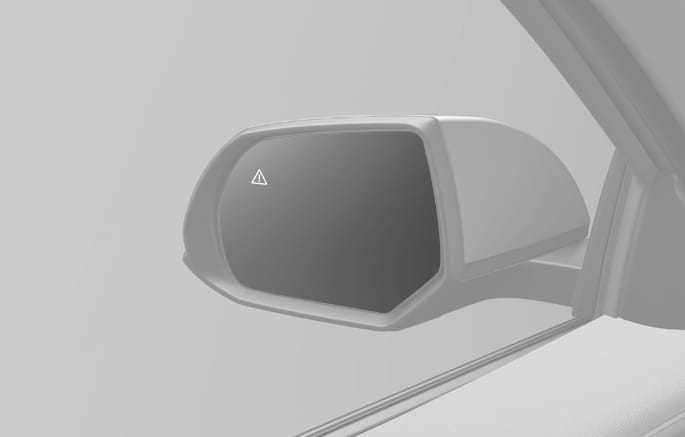
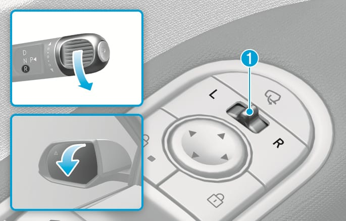

사이드 미러
차량 좌우의 후방 상황을 보여줍니다.
미러를 접은 상태로 주행하지 마십시오. 또한, 주행 중 미러를 접거나 조절하지 마십시오. 운전자의 주의가 분산되거나 후방 상황을 확인할 수 없는 경우 심각한 사고가 발생할 수 있습니다.

2C_SideViewMirror
-
사이드 미러에는 볼록거울이 사용되며, 미러에 비치는 사물과의 실제 거리는 보여지는 거리보다 훨씬 가깝습니다.
-
차선 변경 시 후방 차량과의 실제 거리를 확인하려면 실내 미러를 이용하십시오.
-
미러 표면의 얼음을 긁어내지 마십시오. 미러 표면이 손상될 수 있습니다.
-
미러가 얼어 움직이지 않는 경우, 얼음 제거 스프레이를 이용하거나 차량을 따듯한 장소로 이동해 얼음을 녹이십시오. 강제로 미러를 조절하거나 접는 경우 미러가 파손될 수 있습니다.

2C_AdjustSideViewMirror
시동 'ACC', 'ON' 또는 시동이 켜진 상태에서 미러 선택 스위치(1)로 미러를 선택(L/R)한 후 미러 조절 스위치(2)의 화살표를 눌러 선택한 미러의 각도를 조절하십시오.
-
L: 운전석
-
R: 동승석
-
조절 스위치를 계속해서 누르고 있지 마십시오. 모터가 손상될 수 있습니다.
-
손으로 미러를 직접 조절하지 마십시오. 내부 부품이 손상될 수 있습니다.
조절 스위치를 누르고 있으면 미러는 최대 각도에서 멈추지만 모터는 계속해서 작동합니다.

2C_FoldSideViewMirror
사이드 미러 접이 버튼을 누르면 미러가 접히거나 펴집니다.
도어 잠금/해제 시 자동으로 접기/펴기
도어 잠금 상태에 따라 사이드 미러가 자동으로 접히거나 펴지도록 설정할 수 있습니다.
인포테인먼트 시스템에서 설정 > 차량 > 라이트 > 웰컴 미러/라이트 > 도어 잠금 해제 시를 선택하십시오.
운전자 접근 시 자동으로 펴기
스마트 키를 휴대하고 차량 1 m 이내로 접근하면 미러가 자동으로 펴지도록 설정할 수 있습니다.
-
'도어 잠금/해제 시 자동으로 접기/펴기' 기능을 사용하는 경우에만 이 기능을 설정할 수 있습니다.
-
이 기능은 모든 도어가 잠겨 있는 상태에서만 작동합니다.
인포테인먼트 시스템에서 설정 > 차량 > 라이트 > 웰컴 미러/라이트 > 운전자 접근 시를 선택하십시오.
-
운전자의 안전을 위해, 주행 속도가 15 km/h 이상일 때는 사이드 미러가 접히지 않습니다.
-
업데이트로 인해 인포테인먼트 시스템의 상세 설정이 변경될 수 있습니다. 자세한 설정 방법은 인포테인먼트 시스템 웹 매뉴얼을 참고하십시오.
-
시동이 꺼진 상태로 사이드 미러 접고 펴기를 반복하는 경우 배터리가 방전될 수 있으므로 주의하십시오.
-
기능 버튼을 눌러 사이드 미러를 접거나 펴십시오. 직접 손으로 미러를 접거나 펴는 경우 모터가 손상될 수 있으며 작동 기어가 어긋나 주행 중 진동이나 소음이 발생할 수 있습니다.
-
기어 정렬 이상으로 주행 중 진동이나 소음이 발생하는 경우, 접이 버튼을 눌러 미러를 접었다 펴십시오. 기어가 정확히 맞물리면 진동이나 소음이 사라집니다.
-
미러를 닦을 때 세척제를 미러에 직접 뿌리지 말고, 부드러운 타월이나 헝겊 등에 묻혀 사용하십시오. 세척제가 미러 내부로 스며드는 경우 고장이 발생할 수 있습니다.

2C_AutoReversetSideViewMirror
사이드 미러 선택 스위치(1)가 L 또는 R 방향으로 선택되어 있는 경우, 후진(변속기 R) 시 양쪽 사이드 미러가 아래로 기울어져 후방의 주차 라인 확인을 돕습니다.
오토리버스 사용자 설정 모드
기본 제공되는 사이드 미러 하향 각도가 후방 확인에 적합하지 않은 경우, 원하는 각도로 미러를 조절한 후 저장할 수 있습니다.
차량 출고 시 기본 제공되는 미러 하향 각도는 미러의 좌우 방향에 따라 다를 수 있습니다.
-
브레이크 페달을 밟아 차량이 정지한 상태에서 'R'(후진)로 변속하십시오.
-
사이드 미러 선택 스위치를 L 또는 R로 선택한 경우 미러가 기본 설정된 하향 각도로 변경됩니다.
-
-
미러 선택 스위치로 미러를 선택(L/R)한 후 미러 조절 스위치의 화살표를 눌러 선택한 미러의 각도를 조절하십시오.
-
'P'(주차), 'N'(중립), 'D'(주행)로 변속하거나 미러 선택 스위치를 중립 위치로 변경하면 조절한 사이드 미러 각도가 자동으로 저장됩니다.
-
반대편 사이드 미러도 동일한 방법으로 설정하십시오.
-
오토리버스 사용자 설정 모드 초기화
후진 시 사이드 미러 자동 조절 기능을 초기화하려면, 브레이크를 밟아 차량을 정지한 상태에서 'R'(후진)로 변속한 후 미러 각도를 'P'(주차), 'N'(중립), 'D'(주행)시 각도보다 상향 위치로 조절하십시오.